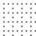
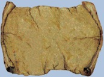
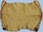
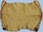
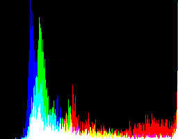
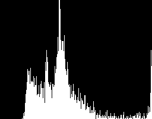

- Index
 ImageMagick Examples Preface and Index
ImageMagick Examples Preface and Index
 Image Formats Summary
Image Formats Summary
- Reading Images
- Saving Images
- Special Output File Formats
(Specific to IM)
-
miff:
info:
null:
txt:
sparse-color:
histogram:
mpr:
mpc:
fd:
inline:
clipboard: -- Read/Write to/from windows clipboard
ephemeral: -- Auto-delete after read
show:, win:, and x:
-- Display Images Directly
x: (as input) -- Display Capture and Re-draw
- Delegates and Coders for Image Formats
- Really Massive Image Handling
- Long Streams of Lots of Images, Video sequences
To process an image, you not only need operators to work on the images, but
you also need ways to read in and write out the image in as many different
file formats as possible. In this section we look at IM file formats in
general.
Image Formats Summary
One of the most common uses of ImageMagick is not to modify images at all, but
only to convert an image from one image format to another. In fact this was
the original reason for IM's creation was this sort of image format
conversion. This is why the primary IM command is call "
convert".
To this end, ImageMagick can handle a bewildering array of image and file
formats. Added to this array are a large number of special input and output
formats for built-in test images, simple image creation, and image formats
specific for programming shell scripts, and programs. For a complete list, see
IM Image Formats
Page on the IM web site.
All this can be daunting for a new user of ImageMagick. My best advise
is to ignore most of the file formats, as you will probably never need them.
Instead concentrate on what you want to do, and try to do it. If you don't
know how, try to look for an example in these pages and across the web.
For image formats demonstrated in IM Examples, see
Reference Index, File Formats.
Reading Images
IM by default will attempt to determine the image format type by the 'magic'
file identification codes within the file itself. If this fails however you
will need to specify the images file format using with the files suffix, or
by adding a prefix format.
Some formats will not read any files and ignore any given filename. These are
some of the common built-in images...
Some of them will generate images based on arguments given as a filename
and perhaps an extra "
-size" controlling the final image size...
-size 30x30 canvas:red
-size 30x30 gradient:yellow-lime
-size 30x30 pattern:fishscales
import:
|
In some cases you can even use multiple formats...
-size 30x30 tile:pattern:gray95
|
This is however overkill in this case as the '
pattern:' format
coder has the '
tile:' coder built into it. But it does make it
clear what you were intending to do.
IM can also download an image that is published on the 'world wide web' by
specifying that images URL. This basically provides a '
http:'
image coder, which is why it works.
convert http://www.ict.griffith.edu.au/anthony/images/anthony_castle.gif \
-resize 100x100 castle_logo.png
| |
![[IM Output]](castle_logo.png)
|
As you can see this command reads the image from the WWW and resizes it
before finally saving the result to disk.
  |
When a prefix file format is given, any suffix given as part of the filename
does not have any bearing on the way the file is read. This is in fact
vital when reading some file formats such as the "text:" verses the "txt:" file format handling. Of course if an image generator
actually reads in an image file to process it in a special way (for example
"tile:") then the suffix (or
prefix) file formats will again become important, as it was in the last
example
|
A special coder prefix "
implicit::" can be used to 'turn-off' any
use of coders, allowing use of ':' in the filename.
Filename can have the special 'file meta-characters', such as '
*'
and '
?' embedded in them. IM will expand these characters to
generate a list of filenames to be read in, avoiding the need for an external
shell to do this, or problems with command line length limits. For example...
montage '*.jpg' -geometry 50x50+2+2 image_index.gif
|
This will produce a single montage index image of all the JPEG files in the
current directory. Note however that I needed to quote the argument to
prevent my UNIX shell from expanding the file names rather than ImageMagick.
See below for a more complete "
montage" specification.
Of course the linux shells can also expand '
*' and
'
?' characters passed to them unquoted. However in some cases
you may find yourself hitting 'command line limits' if the file list expands
to a very large number of filenames.
Here are other examples of using a linux shell to expand the filename...
convert image_[0-9].gif image_[1-9][0-9].gif animation.gif
convert image_?.gif image_??.gif image_???.gif animation.gif
convert image_(?|??|???|????).gif animation.gif
|
Also see the
Read Frames, Read Modifier below, for
an formated incrementing number in the filename.
If the filename is simply the single character string '
-' IM
reads the image from standard input.
cat tree.gif | convert - -frame 5x5+2+2 read_stdin.gif
| |
![[IM Output]](read_stdin.gif)
|
Note that some image file formats allow you to simple append multiple image
files together in one long multi-image stream. These formats include the
simple
PbmPlus/NetPBM image formats, as
well as IM's own special file format
MIFF:
for image in eye.gif news.gif storm.gif
do
convert $image miff:-
done |
convert - -frame 5x5+2+2 +append read_multiple_stdin.gif
| |
![[IM Output]](read_multiple_stdin.gif)
|
The special character '
@' at the start of a filename, means
replace the filename, with contents of the given file. That is you can read
a file containing a list of files!
echo "eye.gif news.gif storm.gif" > filelist.txt
convert @filelist.txt -frame 5x5+2+2 +append filelist.gif
| |
![[IM Output]](filelist.gif)
|
You can also use '
@' with the special filename '
-'
to read the filenames from standard input.
echo "eye.gif news.gif storm.gif" |\
convert @- -frame 5x5+2+2 +append filelist_stdin.gif
| |
![[IM Output]](filelist_stdin.gif)
|
 |
Reading a list of filenames from a file using the '@' syntax was added
in IM v6.5.2-1.
|
 |
As a security precaution this only works with actual image files. It does
not work with image generators such as "rose:" or
"label:string". It also can not be used to 'include' command
line options from a file.
|
Read Modifiers or Extract Setting
Image can be modified immediatally they have been read into memory, but before
the image(s) are actually added to the current image sequence.
You can specify a "
-extract" setting. For example, here I crop the rose image...
convert -extract 32x32+20+5 rose: +repage rose_extract.gif
| |
![[IM Output]](rose_extract.gif)
|
Or you can append a read modifier to the end of the filename using square
brackets '
[...]'. For example...
convert 'rose:[32x32+20+5]' +repage rose_read_modifier.gif
| |
![[IM Output]](rose_read_modifier.gif)
|
Note however that '
[]' characters are usually also special shell
meta-characters, so if you use them it is a good idea to quote the additional
modifier, to stop UNIX shells interpreting it.
Both the "
-extract"
setting and the read modifer does the same job, though the latter will
override the former.
Also when you use a modifier, you must let IM handle any special file
expansion meta-characters, such as '
*' and '
?', as
an UNIX shell will not 'find' the requested files due to the modifier. What it
actually does in that case is shell dependant. As such the whole filename
should be quoted when using read modifiers.
The real purpose of these read modifiers is to limit the amount of memory
needed, by removing unwanted images or making images smaller, while images are
still being read into memory. For example when readin a whole directory of
large JPEG images.
Here is the list of all the special read modifiers (and "
-extract" settings ) and their
effects. A '
#' represent some number.
-
'
[#]' '[#-#]' '[#,#,#]'
[#,#-#,#]'. Read Frames
- Will select specific sub-frames from a multi-image file format
from the image that has been read in. The given number '
#'
index specifies the frame number to read. Multiple indexes can be
specified in either comma order or as an index range.
The image index start at zero for the first image, 1 for the second and so
on. If you specify a negative index then the count is from the end of the
image sequence, in reverse order, -1 for the last image, -2 for the second
last image.
This is exactly the same convention as used for the Image Lists Operators.
For example
convert document.pdf'[0]' first_page_of_pdf.gif
convert animation.gif'[1-3]' second_to_fourth_frames.gif
convert animation.gif'[-1,2]' last_then_the_third_frame.gif
|
You can also get IM to read images based on a list of numbers. For
example..
convert 'image_%03d.png[5-7]' ...
|
will read in the files "image_005.png",
"image_006.png", and "image_007.png". With this
method you can not use a negative index.
-
'
[#x#]' Read Resize
- From IM version 6.2.6-2 a new modifier was added to help IM users to
handle very very large images.
This modifier will resize the image that was just read in, immediately
before that image is added to the other images already in memory.
This can both shrink images, or enlarge images. For example...
convert pattern:gray95'[60x60]' enlarged_dots.gif
| |

|
Warning, the read modifier does not currently use any of the resize flags,
such as '!' (no aspect preserve) or '>' (only
shrink larger images. (perhaps if you put in a request?)
You can also use it as an alternative way of specifying the size of
a solid color canvas. Actually what is happening is that it is resizing
the default single pixel image. For example...
convert 'canvas:DodgerBlue[50x50]' canvas_size.gif
| |
![[IM Output]](canvas_size.gif)
|
The modifier is most important when you are attempting to read in
lots of very very large images, as each image will be resized before the
next image is read, producing a substantial saving in total memory needed
to handle those images.
For example instead of...
montage '*.tiff' -geometry 100x100+5+5 -frame 4 index.jpg
|
which reads all the tiff files in first, then resizes them. You can
instead do...
montage '*.tiff[100x100]' -geometry 100x100+5+5 -frame 4 index.jpg
|
This will read each image in, and resize them, before proceeding to the
next image. Resulting in far less memory usage, and possibly prevent disk
swapping (thrashing), when memory limits are reached.
For JPEG images I also recommend you use the special "-define" setting instead,
producing something like...
montage -define jpeg:size=200x200 '*.jpg[100x100]' -strip \
-geometry 100x100+5+5 -frame 4 index.png
|
The special setting is passed to the JPEG library and is used to limit the
size the JPEG image during the reading process. However it is not exact,
with the resulting image being somewhere between that size or double that
size with the aspect ratio preserved. See Reading JPEG Images for more details.
The result of the combination is a much faster reading and even lower
memory usage for JPEG images. Especially when generating lots of small
thumbnails. See General Thumbnail
Creation.
-
'
[#x#+#+#]' Read Crop
- From IM v6.3.1 if you also add an offset the above becomes a crop of the
image being read in.
For example, To get a smaller 600x400 pixel sub-section from a much larger
image.
convert 'image.png[600x400+1900+2900]' tileimage.png
|
This however will read in the entire image into memory then crop it before
it is finally added to the current image sequence.
If you want to handle really large images I suggest you look at the
"stream" command and pipe
you image into the "convert" command for further processing.
See Massive Image Handling below.
If the image is "
gzip"ed, IM will automatically uncompress it,
into a temporary file before attempting to figure out the image format and
decode the image file format. As such you can not only save images in gzip
compressed format, but use them directly in later IM processing. For large
text based images this can result in enormous disk space savings.
|
The PNG format includes "gzip" compression as part of its
format specification. In this case the first digit of the two digit PNG
"-quality" setting
defines the level of compression. For more detail see PNG Image File Format examples.
|
The above is only a short summary of the special input options available when
reading images into ImageMagick. A full summary is given on the
The
Anatomy of the Command Line page on the
ImageMagick Website.
As shown previously the image input can be modified by some IM settings such
as "
-size" for image
creation and "
-define
jpeg:size=??" for JPEG reading. Other options also effect image input
creation, including, "
-page", "
-type", "
-dispose", "
-delay". See
Setting/Changing
Image Meta-Data.
|
Be very careful when passing an user provided argument to IM in a script,
insuring that the argument is what you expect. You do not want to let a web
image processing script return an image of the system password file for
example.
|
Input Filename Meta-Character Handling
 Under Construction
Under Construction

Not only does the shell handle meta-characters (unless that argument is
quoted) but IM also does its own form of meta-character handling in filenames.
For example
convert *.jpg ....
is expanded by the shell BEFORE passing the filenames to IM, while
convert '*.jpg' ....
will have the shell pass "*.jpg" to ImageMagick, which then expands into
an internal list of filenames! This was provided for Windows Dos support, and
as a method to preventing command line limit overflows in command such as
"mogrify" and "montage", which typically process long lists of images.
As such to actually get IM to read a file names literially named on disk as
'*.jpg' you need to use any of the following forms...
convert '\*.jpg' ....
convert "\*.jpg" ....
convert "\\*.jpg" ....
convert \\\*.jpg ....
NOTE; the second line is NOT recommended as some shells (not bash) and some
APIs (C programs, possibly PHP) may actually remove the single backslash, and
pass '*.jpg' to IM which it will again expand!
On top of '?' and '*', IM also adds the meta-character handling of ':', '%'
and '[...]' for read modifier handling. These however have a different
meaning (codec specification, scene number inclusion, and read modifiers) to
normal shell syntax of those meta-characters.
For example DOS uses will need to escape a 'drive-letter' in filename paths
being passed to ImageMagick. For example...
convert C\:\path\to\image.jpg ....
Another example is when loading an image containg a time code. For example..
convert "time_10\:30.jpg" ....
will read the filename "time_10:30.jpg" from disk. Without the backslash, IM
may think that the image should be read with a non-existant image file format
(or delegate) "time_10:", and fail in an unexpected way.
An alternative is to use a question mark...
convert "time_10?30.jpg" ...
However that may also match another file such as "time_10_30.jpg" as well!
Compressing Images
Under Construction
IM will also read files that have been compressed, and given the appropriate
suffix, or image format specification.
That is an image saved as "image.gif.gz" will first be uncomressed, before
being decoded from its GIF image format.
Gzipped XPixmap (xpm) and NetPbm/PbmPlus (ppm) images is also automatically
handled, both by Imagemagick, and the formats normal delegate library. As
such you can use the compressed forms directly either in IM, or in other
programs that understand these file formats.
See Saving Compressed Images below.
Saving Images
Processing images is well and good but it can be just as important to save the
results in the right way.
The last argument of the "
convert", "
montage" and
"
composite" defines a filename, and image format for a final
write of the image (defailt image output). Though you can also save an image
in the middle of an image sequence using "
-write" (see below).
To specify what file format you want to save your image, or images, you can
either use a filename suffix, such as I use in just about all these examples,
or prefix the filename with the string "
{format}:". For
example...
convert tree.gif GIF:tree_image
| |
![[IM Output]](tree_image)
|
If you check the resulting image you will find that a GIF image file was
actually created, even though the filename itself does not have
a "
.gif" filename suffix. The case of the format is not
sensitive, so you can use either lowercase or uppercase.
This image format specification becomes particularly important when you want
to save the image to the standard output of the command (using
a "
-" filename). This special filename does not have a suffix, so
you
must tell ImageMagick what format to use. If you don't, the image
will default to the original image format that the image came from (if known).
For example, here we write an IM pixel enumeration to the screen using a
"
-" to output the result to the standard output.
convert tree.gif -resize 1x3\! txt:-
|
It is also used to pass the image, on to another command such as
"
identify" though a shell 'pipeline', without saving it to
a temporary file.
convert tree.gif -resize 200% miff:- | identify -
|
In this case you can also see that the special "
-" filename is
also used to denote reading an image from standard input by the
"
identify" command.
For more information see the offical guide at
The Anatomy of the Command Line, Output Filenames.
Filename Percent Escapes
The save filename can contain a few special percent escape (
%)
sequences. Specifically, '
%d', '
%x', and
'
%o'. These inserts the images 'scene number' into the file
name using the C '
printf()' formats. For more information see
Writing a Multi-Image Sequence below.
Of course this means that if you want to insert a percent character into the
filename you will need to double it ('
%%').
As of IM v6.4.8-4 you can now also insert special pre-prepared setting (must
start with '
filename:' into the final filename. For example...
convert rose: -set filename:mysize "%wx%h" 'rose_%[filename:mysize].png'
| |
|
This saves the built-in rose image into a file containing that images size in
pixels. Specifically, the filename "
rose_70x46.gif". This will
let you (with a little indirection) use any
Image Property Percent
Escape as part of your output filename.
Note that only a '
%[filename:label]' image
Property can be used within the output
filename (along with the normal '
%d' escape. This restriction is
for security reasons and the fact that legitimate image filenames could
include '
% and '
[]'.
Warning, do not include the file suffix in the filename setting! IM will not
see it, and save the image using the original file format, rather than the one
that was included in filename setting. That is the filename will have the
suffix you specify, but the image format may different!
The '
filename:' setting does not need to be the same for every
image. You can generate or even calculate or set a different setting for each
image being used. Here is another example where I modify an image, and write
it to a new filename, that was built using each individual images original
filename.
convert eye.gif news.gif storm.gif -scale 200% \
-set filename:f '%t_magnify.%e' +adjoin '%[filename:f]'
|
![[IM Output]](eye_magnify.gif)
![[IM Output]](news_magnify.gif)
![[IM Output]](storm_magnify.gif)
This magnifies each image such as "
eye.gif" and saves it in the
file "
eye_magnify.gif" in the current directory. However all
three images are read into memory, and then modified by the one command. This
is not a recommended solution for a number of large images, or very large
numbers of images, due to the posibilty of reaching memory limits and thus
going to disk swapping (thrashing).
Note that the "
+adjoin"
in this case is vital to prevent IM saving all the images into a mutli-image
GIF animation, using just the filename of the first image.
I also ensured I preserved the original suffix of the filename using the
"
%e" escape sequence. Normally including the suffix in the
filename setting is a bad idea, as IM does not see it when it comes from
an escape sequence, for determining the output file format. In this case
however the format is not changing so there is no problem. Caution is needed.
To get the exact original filename of the image use '
%d/%f' or
'
%d/%t.%e'. You can also use '
%m' instead of
'
%e' which is the actual format (in capitals) that IM found in
the original images file (which may not match the original images filename
suffix). Note that for built-in images, many of these escape sequence strings
are blank. Also if there is no directory the '
%d will be blank.
This is a known problem for IMv6
Another example of using 'Filename Escape Sequence' is in
Tile Cropping Images, where the technique it is
used to generate a filename basied on a calculated tile position for each of
the resulting images. Also see the example in
Using Convert Instead of Morgify.
Automatic GZip Suffix
IM will also automatically "
gzip" images if a "
.gz"
suffix is given.
For example here I save the built-in "
rose:" image as a
"
gzip"ed, uncompressed GIF file. I turn off the normal LZW
compression of GIF, as it would prevent "
gzip" compression from
achieving its best compression.
convert rose: -compress none rose.gif.gz
| |
![[IM Output]](../img_www/doc_art.png)
|
How browsers handle a gzipped image depends on the file type returned by the
web server and how your browser handled compressed images. Because of this
I did not directly display the above image. Click on the 'art' icon to see
what your browser does, with such an image from this web server.
Compare the size of this to a normal saved LZW compressed GIF image...
The "
gzip"ed rose is
![[IM Text]](rose_gz_size.txt.gif)
bytes in size, while a normal LZW compressed rose is
![[IM Text]](rose_size.txt.gif)
bytes. As you can see GZIP compression is actually slightly better than the
LZW compression that the GIF format uses, so may be better for archiving
purposes.
GZipped image files are more commonly used for longer term storage of image
file formats that do not have any compression by default. This includes the
IM File format "
MIFF:" and the simpler
NetPBM image file formats.
Saved Attributes
Under Construction
Other Settings specific to image writing....
-depth -quality -compress -type -loop
-set label -set comment
Also see Image Depth,
Image Type,
JPEG Quality,
PNG Quality.
GIF loop.
Talk about file compressions, which are part of various image formats.
Different compressions are used for different image formats.
Especially the JPEG to TIFF compression change needed.
Using or "-compress
None" and "-compress" NetPBM text/binary format selection.
The GIF compression and the copyright patent.
Other than using IM to reduce -quality or changing the format to something
else the -compression option is rarely used. Often it is only used internally
by IM to save images using the same compression the image was read with.
Encrypted Images
IM also allows you save sensitive images with encrypted with a pass phrase
using the options "
-encipher" and "
-decipher". See
Encrypting
Images
Writing a Multiple Images - Adjoin Techniques
A major problem with saving images, is that ImageMagick works with an ordered
sequence (list) of images, not just one image at a time. Because of this IM
will attempt to write ALL the images in the current image sequence into the
filename given.
If the file format allows multiple images IM will by default save all the
images in the current image sequence into that image file. For example if you
look at the
GIF Animation Basics examples page
you will see that it will save multiple image frames into a single image file
format to produce an animation.
If the output format does not allow you to save multiple images into the one
file, IM will instead generate multiple files. For example, when saving to
image formats like
JPEG and
PNG and so on.
You can also force this behavior on image formats that do allow multiple
images per file, such as
GIF and
PS by using the
"
+adjoin" output file
handling setting.
convert eye.gif news.gif storm.gif +adjoin image.gif
|
![[IM Output]](image-0.gif)
![[IM Output]](image-1.gif)
![[IM Output]](image-2.gif)
If you look closely at the filenames of the three images generated above, you
will see that IM generated images named "
image-0.gif" to
"
image-2.gif".
|
Previous to ImageMagick version 6.2.0 the output filename of the above
would have been "image.gif.0" to "image.gif.2".
This resulted in many problems due to the loss of the filename suffix,
so was changed to add the image number, before the filename suffix.
|
An alternative is to add a 'C language printf()' construct "
%d"
to the output filename. This special string will be replaced by the current
image number of each image in sequence.
convert eye.gif news.gif storm.gif +adjoin image_%d.gif
|
![[IM Output]](image_0.gif)
![[IM Output]](image_1.gif)
![[IM Output]](image_2.gif)
Here we generated the images "
image_0.gif" to
"
image_2.gif", using an underscore rather that the IM default of
a dash.
|
Not only can you use '%d' for a decimal number, but you can
use '%x' for a hexadecimal number (lowercase),
'%X' for a hexadecimal number (uppercase), or
'%o' for an octal number.
|
|
If you really want a percent character which is followed by one of these
letters, then you will need to double the percent character to escape its
meaning. That is you will need to use '%%' to ensure you
actually generate a percent symbol.
|
|
The '%d' in the output filename actually enables the
"+adjoin" setting of
ImageMagick, automatically.
However while I don't actually need the "+adjoin" in the above, it is
probably a good idea to provide it anyway, just so it is clear that you
are generating separate images.
|
This works well for a small number of images, but if you have more than ten
images you will get a mix of image with one digit and two digit numbers. And
if you have more than a hundred, you get three digit numbers too. When that
happens, directory listings will no longer list the saved images in sequence,
since "
image_15.gif" would alphabetically appear before
"
image_5.gif".
Of course there are ways to fix this. For example using a command line shell
expressions like..
convert image_[0-9].gif image_[1-9][0-9].gif animation.gif
convert image_?.gif image_??.gif image_???.gif animation.gif
convert image_(?|??|???|????).gif animation.gif
convert 'image_%d.gif[0-123]' animation.gif
|
The last method is the proper IM way of handling a sequence of files, though
you need to know the range of number you want to use. The '
%d'
formats each number to match the filename (see next)
In any case, this is awkward and prone to mistakes, can produce errors if
files are missing, and can be dependant on what type of computer system you
are using. Better to avoid this problem altogether.
If you are familiar with the 'C' language (look up the UNIX system man page
for '
printf') then you will probably know that if you use
something like "
%03d" you will always get 3 digit numbers (with
leading zeros) for the image sequence frame number. The image names would in
that case be "
images_000.gif", "
images_001.gif" and
so on.
convert eye.gif news.gif storm.gif +adjoin image_%03d.gif
|
![[IM Output]](image_000.gif)
![[IM Output]](image_001.gif)
![[IM Output]](image_002.gif)
Using this method, the images will not only be numbered, but will also list
alphabetically correctly, making image file handling a whole lot easier.
I thus recommended you add a '
%03d' or whatever is appropriate,
to the output filename whenever you plan on writing multiple images, as
separate image files.
Written Scene Numbers
If you want the image sequence to start at '
1', instead of
'
0', and don't want to rename all the resultant image files, the
simplest solution is to prepend a 'junk' image on the front of the sequence
to be written.
convert null: eye.gif news.gif storm.gif +adjoin image_%01d_of_3.gif
rm image_0_of_3.gif
|
![[IM Output]](image_1_of_3.gif)
![[IM Output]](image_2_of_3.gif)
![[IM Output]](image_3_of_3.gif)
You can, of course, use "
+insert" to do this after your image processing. This is not a
particularly nice solution, but works, and is simple, and backward compatible
with the older major versions of IM.
As of IM version 6.2 you can use the "
-scene" setting to set the starting number for the current image
sequence.
convert eye.gif news.gif storm.gif +adjoin -scene 101 image_%03d.gif
|
![[IM Output]](image_101.gif)
![[IM Output]](image_102.gif)
![[IM Output]](image_103.gif)
Which produced the image files "
image_101.gif" to
"
image_103.gif".
Writing an Image, Multiple Times
While on the subject of writing images, it is possible to write an image
from the middle of a sequence of image operations, using the special "
-write" image operator.
This is very useful when you like to output an image multiple times at various
points during image processing. For example, see
Complex Image Processing with Debugging.
Here is an example where I have a
Photo of some Parrots, curtisy of the
Kodak Lossless True Color Image
Suite (image 23), but I want to save them in a range of different sizes,
using one command...
convert parrots_orig.png \
\( +clone -resize x128 -write parrots_lrg.jpg +delete \) \
\( +clone -resize x96 -write parrots_big.jpg +delete \) \
\( +clone -resize x64 -write parrots_med.jpg +delete \) \
-resize x32 parrots_sml.jpg
|
![[IM Output]](parrots_med.jpg)
![[IM Output]](parrots_sml.jpg)
As you can see we can use the
Image List
Operators to process a 'clone' of an image, write out the result, then
delete and backtrack back to the original source image, repeating the process
as many times as you need.
In this particular case it means I did not end up resizing the same image over
and over, and thus accumulating resize errors. It also meant I could have
just as easily generate the smaller images first, then the larger images after
that, without problems, or modify the image in many different ways for each
image file generated.
That is the order and modification of each image is irrelevent!
Note that "
+clone" does
not actually duplicate the image data! IM uses a reference-counted cloning
process which only copies the image pixels when they are updated. As such only
enough memory to hold the original image and the new image that is generated
is actually used, in the above process. It also makes "
+clone" very fast, and memory
efficient.
Here is another technique of doing the same thing, but saving the original
image in a named image register using "
MPR:"
(see below), instead of "
-clone".
convert scroll.gif -background lightsteelblue -flatten -alpha off \
-write mpr:scroll -resize x128 -write scroll_lrg.jpg +delete \
mpr:scroll -resize x96 -write scroll_big.jpg +delete \
mpr:scroll -resize x64 -write scroll_med.jpg +delete \
mpr:scroll -resize x32 scroll_sml.jpg
|

![[IM Output]](scroll_big.jpg)
![[IM Output]](scroll_med.jpg) 

Here we save one copy of the original image into the "
mpr:scroll"
image register, before modifying the image still in memory after the write.
Note that a MPR register can actually hold a whole sequence of images.
Once the results of that operation is written and deleted from memory, the
original image (or image sequence) is recovered, and the process repeated as
many times as needed.
Of course as previously there is no need to use "
-write" on the final image, as we
can just output it as normal. If you did use a "
-write", you can instead just junk
the final image using another special file format "
NULL:" (see below).
A word of warning about "-write": Because some file formats require images to be in
a special format for writing, the "
-write" operator could modify images. GIF images for example may
be color reduced (see
Quantization and Dithering).
However other formats will leave the source image as is (see
MIFF and
MPC below).
If you need protect yourself from these changes (as you are not simply
deleting the image afterward), you can use "
+write" which will make
an internal clone of the image for writing, then delete it afterwards.
However remember that this can result in a doubling of memory use to hold the
write modified copy of the image. At least for a moment.
Special File Formats
(specific to IM)
As you saw above (and will explore in the next section
Common Image File Formats), ImageMagick understands a huge number of well
known image file formats. It also includes a good number of special image
generators (as exampled in
Canvas Creation). On top
of these there are also some very special file formats, which allow some very
special handling of images.
-
miff:
- Is the ImageMagick File Format. The whole image sequence and all
the attributes associated with the images are saved in this file format.
Of course only ImageMagick commands will read this format, so it is not
suitable for transferring between different image processing packages.
The "
miff:" file formats primary purpose is as an intermediate
save format, when processing images in long an complex ways. It is also
suitable for 'pipelining' an image from one IM command to another, while
passing image meta-data and other attributes assocated with the image.
I recommend when writing "miff:" that you include a "+depth" option. This will
reset the 'input depth' of the image to the IM memory quality so as to use
the best posible quality for the intermediate image save. Of course you
can 'clip' the save image depth using "-depth 8" so as to
reduce the image size on disk, however that will also force Quantum Rounding effects as well
(unless HDRI floating-point save is
also enabled).
For those interested in parsing this format, it starts with a plain
text header of all the image attributes. The header end in a line
containing a single formfeed character.
This header is itself an useful way of extracting basic image information
in various image processing processing scripts. For example here are
I use a GNU-sed command to list the "miff:" header up to the
formfeed separator, showing all the attributes of the built-in
"rose:" image.
convert rose: miff:- | sed -n '/^\f$/q; p'
|
This is actually quite useful as it reveals all the current settings flags
and meta data that IM knows about the image. However there is also
statistics, as these are generated by either the "identify"
command, the "-identify" operator or the special "info:"
format; if requested with a "-verbose" option. (see next)
The image file format has very low parsing requirements, and while not
compressed, can handle ANY type image IM knows about. It is almost the
most ideal format to use for temporary images, and pipelined image
commands you can use, though ImageMagick programs is the only one that can
read it.
See also the "MPR" image memory register,
and "MPC" memory disk mapping formats
below.
|
The raw image data (binary) is actually prefixed by the four character
sequence "\n\f\n:", (formfeed on a line by itself, and a colon). How this
data should be read is encoded in the header data, but tyically consists
of binary integers in RGB turples. But can have more channels, and could
even consist of floats or even double data values.
In may ways it is practically identical to a binery PbmPlus Image file format,with a
greatly expanded header to hold image meta-data, and more variations in
number of channels and data types.
|
-
MIFF Image Streaming
- The "
miff:" format is a 'streaming' image file format. That
is to say multiple images are handled simply by appending or concatenating
the images together, one after the other.
This means you can generate a 'stream' of multiple images, simply by
writing the images to the same destination, such as a pipeline. Even if
the individual images were generated by different commands.
For example you can have a loop of image processing commands, each command
simply outputs a 'streaming' MIFF image. After the loop you can pipe the
'stream' of images into an into a single command to generate montages,
collages, animations, or something else.
For example the following generates a list of colors starting with the
letter 'b', then uses a loop of "convert" commands to
generate a labeled color patch, one color at a time. These are then
'piped' into a "montage" to generate a simple color table.
convert -list color | egrep '^b' | \
while read color junk; do \
convert -label $color -size 70x20 xc:$color +depth miff:-; \
done |\
montage - -frame 5 -tile 6x -geometry +2+2 \
-background none color_table.png
|
![[IM Text]](color_table.png)
The above specific example was programmed into a script "show_colors" which you can use to
search for, find and display colors, for use in your image processing.
The above is an example of a 'Pipeline of Streaming Images that is
very useful for generating multi-image sequences. Other examples of this
technique include Programmed Positioning
of Layered Images, Pins in a Map,
the 'Named Colors Image' in Colors
by Name, and the animations such as shown in Random Ripples.
This technique can also be used with operations like "-write
miff:-", so as to output a miff format image from multiple places
in a single command. Each image will be automatically append together in
the final output stream. This can be especially useful for debugging
complex image processing commands.
The alternative method (commonly using in PHP scripts) is to use
a 'generated command' technique, that uses a shell script to generate
a long "convert" comamnd to be run. The scripts in Image Warping Animations use this
technique.
-
info:
- The "
info:" file format (added in IM v6.2.4) does NOT
output an actual image! This format basically outputs the same
information that the ImageMagick "identify" command will
output.
Like "identify" this output format is controlled by the
"-format" and
"-verbose" options
allowing you to output just the specific information you are interested
in, as defined by the Image Property
Escapes page.
For example instead of piping a MIFF image to "identify" as
we did above (see Saving Images), we could
have used the following, to retrieve the single line identification of the
resulting image format.
Of course you can use a "-format" setting to output the desired information in a
specific and more parsable way.
What is so useful about "info:" is that you can now produce
your image, while extracting extra information about it, at the same time.
This is done by using the "-write" operator to save this special image format to a file
(or the commands normal standard output).
|
convert rose: -shave 12x0 -repage 64x64+9+9 \
-format '%wx%h %g' -write info:info_paged.txt paged.gif
| |
![[IM Output]](paged.gif)
|
|
| |
There is also a "-identify" operator that is equivalent using "-write info:" to output
image identification information to standard output. This make it even
easier to monitor what is happening to your images when debugging your IM
commands.
For example...
|
convert logo: -identify \
-trim -identify \
+repage -identify \
-resize 80x80\! -identify \
logo_thumbnail.gif
| |
![[IM Output]](logo_thumbnail.gif)
|
|
| |
Here you can see how "-trim" reduced the size of the image but preserves the 'crop'
information of what part of the image was trimmed, then the "+repage" removing that extra
'canvas' or 'page' information. And so on.
Also like the "identify" command, both "info:" and "-identify", will become much more verbose if the "-verbose" setting is turned
on. Here I limit the long output to just the first few lines, just so you
can get a bit of an idea about it.
convert rose: -verbose info: | head
|
|
The "-verbose"
setting will also cause extra information about images being read in
or out, to be printed to the standard error (with the exception of the
"info:" format). It also causes some operators like
"-colors" to
output additional information. As such you may like to turn it off
again after using it with either "-identify" or the
"info:" format.
For example "-verbose -write
info:image_info.txt +verbose" or
"-verbose -identify +verbose"
.
|
|
Scripted reading of the output from any form of "identify", should do so in a case
in-sensitive way. This insures better backward compatibility between
different versions of ImageMagick.
|
NOTE: "info:" (and "-identify") is only an
output format, producing the same output as the "identify" command. You can not
read, or create an image using the "info:" file format.
You can also use "-print" to print information, but that is applied only once
against the whole image sequence. That means you can use this operator
to calculate much more complex '%[fx:...]' expressions
involving multiple images. But remember unlike the other methods
above, it is only applied once accross all images.
-
null:
- As an output format, this will just 'junk' the image results. As such if
used as the final argument in a "
convert",
"montage", or "composite" command the final
result will not be saved!
Why? Well it may be that you are more interested in specific images,
generated during image processing rather than the overall result,
especially when debugging.
For example, here we extract and save one image, from an image sequence,
then junk all the other images using "null:".
convert eye.gif news.gif storm.gif tree.gif rose: logo: \
\( -clone 2 -write write_storm.gif \) null:
| |
![[IM Output]](write_storm.gif)
|
This is a lot simpler than attempting to delete all the other images
one at a time.
As an input image format however, "null:" will generate a
special placeholder image of a single transparent pixel, with with a
special 'null source' flag, in the current image sequence.
This special image is especially important to Leave Gaps in a Montage, and as a list separator for multi-image Layer Composition.
It is closely related to another special image format known as a 'missed image', that can be
generated for operations like "-crop". This image format is produced when an operation
produces an empty or non-sensible result. Both images are a single
transparent pixel, and as such "null:" images will also be
treated as if it is a 'missed image'.
At this time there is no method to remove any "null:" or even
'missed image', from the current image
sequence. However such a method has been proposed. Mail me if you find
you need such a method.
-
txt:
- This is a simple ASCII text file, which basically lists each pixel in the
image, one per line. It is not a general text to image converter, for
that see Multi-line Text Files Examples. If
the 'pixel enumeration' is not reconised, the image will be passed to the
"
text:" format coder, for
rendering as a plain text file.
For example here is a "netscape:" image scale to a 2x2 pixel
image, then listed using a "txt:" image format.
convert netscape: -scale 2x2\! txt_netscape.txt
|
The first line (header) of the image is packed with the basic information
about the image. The information consists of...
File Magic: The image header defines this file as a the
special IM text image format (EG a "ImageMagick pixel enumeration" file),
this is known in computing circles as the files 'magic' or the code string
which identifies this file as being this specific file format.
Image Size: The next two numbers define the size of the image
contained in this file. Multiplying these numbers together will also tell
you how many lines should follow the header to fully define the image. IM
will always output this many lines, though as you will see later when
reading you do NOT need to define ALL the pixels.
MaxValue: The last number in the header defines the 'maximum value'
of the image data that is possible. In the above examples this was
'255' which is a result of using a 8 bit depth.
The reason it output the built-in "netscape:" image at this
depth is because it was defined internally using 8-bit values, and as such
IM preserved this depth level for the image. See the section on the Depth Setting for more information.
But you can override the depth setting (up to the limit of your IM's Q or
Compile-time Quality setting, by
changing the images "-depth". For example here I output the color values as 16 bit
values (from 0 to 65535)...
convert netscape: -scale 2x2\! -depth 16 txt_netscape_16.txt
|
|
At this time you can not set a specific 'Maximum Value' to use in the
output file format. You can only define a different value in terms of
the current "-depth" setting, making the maximum value equal to
2^depth-1.
|
Colorspace: The last item in the header defines the colorspace of the data that
follows. If the image contained any transparency, a final letter
'a' (for alpha) is also appended to the colorspace name, and
an extra column of numbers added between parenthesis. Grayscale images
will output an image as 'grey', but will define at least
three numbers, which will be the same value for each pixel.
For example here is the same image using a colorspace of 'LAB'
with an alpha channel added!
convert netscape: -scale 2x2\! -colorspace LAB -matte txt_cspace_lab.txt
|
After the initial header are the Pixel Data lines, one per pixel in
the image.
Coordinates: The first two numbers up to the colon ':'
is the pixel position, starting from 0.
Color Values: After this the color values for the pixel (from 0 to
the MaxValue given in the header) is given in parenthesis, with
anywhere from 3 to 5 numbers depending on the current colorspace for the
image. Spaces are optional so caution is advised when parsing the numbers
in parenthesis.
|
The values are normally intergers. However as of IM v6.9.2-1, if the
special define "-define
txt:compliance=css" is given with "-depth 16" the values will be
represented as percentage values with '%' signs. This is part
of SVG, CSS compliance.
|
Color Comments: Anything that follows the numbers in parenthesis, is
regarded as comment. IM will fill in extra information on the pixel color
using formats that it can parse as a color argument (See "-fill" manual entry for details
of these color specifications).
The color comments are however variable, though typically it will start
with a hash ('#') hexidecimal color value, after which it may
output RGB() values, or color names depending of the pixel data given.
These colornames should be understood by ImageMagick, but are meant as
a referance only, as it is purely a comment.
Exactly what colors is provided is highly dependant on the IM version you
are using, especially in early IM v6 versions and before. There is no
guarantee that this comment area will not change again in the future, so
it is best not to rely on it. IM doesn't when reading a Pixel Enumeration
Image.
Here is an example of correctly reading a Pixel Enumeration in a shell
script. The exact format of the TXT image is defined by the convert
command, then 'tail' is used to junk the header,
'tr' to character replace every non-number character with a
single space, so that the later 'while' can read the numbers
easily, junking any later comment numbers that may have been left over.
convert rose: -resize 3x2\! -depth 8 -colorspace RGB +matte txt:- |
tail -n +2 | tr -cs '0-9.\n' ' ' |
while read x y r g b junk; do
echo "$x,$y = rgb($r,$g,$b)"
done
|
Reading TXT images is also valid. You do not need to define ALL
the pixels in the image. In fact you do not even need to have the pixels
in the correct order! ImageMagick will just read each pixel defining line
in turn, and 'draw' it onto a blank image canvas. Only the numbers in the
parenthesis on each line is used for this, not the color names.
The initial blank canvas, is cleared and set to the current background
color. As such any pixel not provided by a "txt:" image, will
be left as this color.
For interesting use of "txt:" images, look at Forward Pixel Mapping where
I output an Enumerated Pixel Image, then change each of the pixel
locations so as to rotate (distort) the image, before reading the
Enumerated Pixel Image, back into IM again. In the resulting image some
pixel locations were not defined, while other locations had multiple
pixels added. IM handled this without problems.
The "txt:" format is especially useful with the "-unique-colors"
operator, which replaces each image in the current image sequence with a
new image containing one pixel for each unique color found. When this is
output to a "txt:" format file, you get a basic summary of
the colors contained in an image (though not their counts, or histogram).
For example here are the colors used by the tree image. As GIF can only
use 8 bit numbers, the colors is also output at the same Depth.
|
convert tree.gif -unique-colors txt:-
| |
![[IM Output]](../images/tree.gif)
|
|
|
There is another alternative to using the IM "txt:" format
using the various NetPBM image file
formats. IM by default outputs this format as binary, but you can turn
off "-compress"
to output an ASCII text version of the NetPBM format. For example.
convert tree.gif -unique-colors -compress None -depth 8 tree_netpbm.ppm
|
You may notice that the numbers in the above matches the number in the
IM's Enumerated Pixel ("txt:") format. See Resized Gradient for some examples
of generating a NetPBM format image for IM to read.
If you just want the color of a specific pixel you can crop the image down
to one pixel, and output it as a "txt:" image.
convert rose: -crop 1x1+12+26 txt:
|
Or you can use a special FX
Escape Format to output the color in a form directly usable by IM.
convert rose: -format '%[pixel:u.p{12,26}]' info:
|
See also Extracting Image Colors.
-
sparse-color:
- This is a special output image format that will return a simple comma
separated list of coordinates and colors for each pixel that is not
transparent. The output string is suitable for direct input into the Sparse Color Operator.
For example this finds the few pixels 'closest' to a pure red color
in the "
rose:" image.
convert rose: -alpha set -fuzz 13% +transparent red sparse-color:
|
In many ways this is more useful that the "txt:" format shown above, but only if a couple of pixels are
involved.
Be warned however that at the time of writing, the output is all one line.
Shell scripts may like to convert the spaces in the output to newlines.
-
histogram:
- This is actually the "
miff:" image
format, but with a very large image comment that contains a complete count
of all the colors within the image. That is in the "miff:" text header 'Comment={...}' attribute.
For example, here we again list the colors present in the "tree" image,
but this time including the pixel count for each color. The text
histogram comment is extracted from the "histogram:" image
using a secondary "info:" formatted
identify.
|
convert tree.gif -define histogram:unique-colors=true \
-format %c histogram:info:-
| |
|
|
|
|
The "info:" output format was added to IM v6.2.4.
For IM versions before this use..
convert tree.gif histogram:- | identify -format %c -
|
|
You will note that the format is almost exactly the same as that of the
previous TXT, or IM Pixel Enumeration Image format, including the comments
on the color values. The only difference is that the X,Y location has
been replaced by a count of the number of pixels.
|
This comment can take a very long time to create. As of IM v6.6.1-5, you
can add the special setting "-define histogram:unique-colors=false" which will turn off this
comment generation if you do not need it.
|
The image itself is a histogram graph, 256x200 pixels in size. The x-axis
is color value (0-255) and the y-axis is pixel count (normalized to the
number of pixels). The histogram for each channel is displayed in the
color it represents, and added together. Thus, red and blue overlap to
make magenta. In other words with color channel has its own separate
histogram.
If you want the image converted to some other format, just save it into
that format. "histogram:" is a special image processing
format. It will convert the image, then output in the format specified by
the filename suffix or further "format:" codes.
convert rose: \
-define histogram:unique-colors=false \
histogram:histogram.gif
| |

|
An image that is very dark will be heavily weighted to the left, while
a light image will be heavily weighted to the right. Mid-tones,
likewise, are represented in the middle.
To see this better here I separate the histograms for each of the color
channels. I also strip the histogram text comment (if still present), and
resize the image for display.
convert histogram.gif -strip -resize 50% -separate histogram-%d.gif
|
For the "rose:" image above you will see that red is spread
more showing its vital importance in the image. On the other hand green
and blue spikes on the left, showing that is has very little influence on
the image at all.
If you are more interesting in the brightness of an image rather than its
colors, convert the image to a gray-scale before generating a
"histogram:" image.
convert rose: -colorspace Gray \
-define histogram:unique-colors=false \
histogram:histogram_gray.gif
| |

|
As you can see the histogram of a gray-scale image is a little different.
As the predominate red color become more of a mid-tone grey color,
producing a spike in the center of the histogram. Also the small area of
off-white in the image now produces a distinct spike at the extreme right
of the graph.
The completely empty space at the extreme left also shows that there are
no dark patches in the image at all.
On the other hand a better 'global' histogram can be generated by
simply separating all the color channels in the original image and
appending. The resulting histogram is a representation of all the color
values regardless of which channel that value is from.
convert rose: -separate -append \
-define histogram:unique-colors=false \
histogram:histogram_values.gif
| |
![[IM Output]](histogram_values.gif)
|
Unfortunately as "histogram:" is an output format, you will
either need to 'pipe' the image into another command, save it to disk, or
use the special "mpr:" save/read, if you
want to process the image further. See example in "mpr:" below.
It would good if some method of generating histograms (and other graphs)
became available as operators rather than a special output format.
-
mpr:{label}
- (Memory Program Register) will save the whole image sequence into a named
memory register, from which you can later read the image data. As such if
you want to save an image for use latter, in a complex image operation you
can do so.
Writing to a "
mpr:" at the end of processing is useless, as
the program memory is returned back to the system when the program
finishes. As such you will want to use a Write
operation to save the images to a file in the middle of your processing
steps, if you need it in a different process.
The 'label' given to "mpr:" can be anything you like,
it is only a label on where the image was saved in memory. It can even be
just a simple number for people who do scripting and don't want to deal
with names, though names could make your script easier to follow.
After you have saved an image see below), you can then read in the image
again, from the same 'labelled' memory location, as many times as you
like. For example...
convert tree.gif -write mpr:tree +delete \
\
mpr:tree mpr:tree mpr:tree +append mpr.gif
| |
|
Note the use of "+delete" in the above image processing. In the above it is
not necessary (just re-read the "mpr:tree" two times instead
of three), but it is very common to Delete all images from the current image sequence after saving the
images in a "mpr:" register.
Basically the two lines in the above can be thought of as two completely
separate "convert" commands, but using a named memory
register for the intermediate image rather than disk space.
In many ways using "mpr:" is like using Clone or Duplicate (which we could have used in the above example), but using
"mpr:" allows use to completely remove all the images, to
clear the current image list for other work.
The best feature of this method is that it also allows you to use settings
and operations that only work on image input. For example, using it with
the input image "tile:"
operator to tile an image over a larger area.
convert tree.gif -flip -write mpr:tree +delete \
-size 64x64 tile:mpr:tree mpr_tile.gif
| |
![[IM Output]](mpr_tile.gif)
|
You can also use "mpr:" to grab the output of some of the
special output image format filters for further processing. For example
here we save the output image from "histogram:" and then read it back in continue to processing it
in the same command,
convert rose: -define histogram:unique-colors=false \
-write histogram:mpr:hgram +delete \
mpr:hgram -strip -resize 50% histogram_resized.gif
| |
![[IM Output]](histogram_resized.gif)
|
The "mpr:" in-memory save is actually the only way you can
re-use images already in-memory through special I/O filters such as an
output file format like "histogram:" or an input file format like "tile:".
The same is true for the special options that take an actual input image,
such as "-tile" or
for "Color Mapping"
images using another image as a source. See Multi-image Color Maps. NOTE that such
options are being replaced in IMv7 with versions that do not need the
image to be read from a file.
It is also the only way to use the -draw
'image' method to overlay images using a generated in-memory image,
though there are lots of other techniques to do this.
The "mpr:" image actually saves the whole image
sequence and not just one image. It is a bit like taking a snapshot
of the current image sequence so you can reload it later on for further
processing. This for example allow you to take copies of a whole
animation sequence, for duplicating or cloning, without needing to know
how many images are actually involved. See Layers Composition for an example of
doing this.
When you do have multiple images in "mpr:" you can actually
still extract individual images from that sequence! Using
"mpr:image'[2]'" will pull the third image from
a multi-image sequence saved using "-write mpr:image".
For example here I extract the 'storm' image from a set of four images.
convert eye.gif news.gif storm.gif tree.gif \
-write mpr:images -delete 0--1 \
\
mpr:images'[2]' mpr_extract.gif
| |
![[IM Output]](mpr_extract.gif)
|
The Image Cloning operator cannot
generally handle an unknown variable number of images, and in fact before
the Clone operator was added
"mpr:" was the only method available for duplicating
in-memory images, without using intermediate disk files.
|
As of IM v6.8.2 you can also store images in a remote IM caching daemon
process. This allows images (and there meta-data) to be passed between
separately running IM commands, without needed disk space. See Distributed Pixel Cache Daemon
|
-
mpc:
- Is a special IM specific disk save format that was originally designed
with really large images in mind. Basically is is a memory-mapped disk
file of program memory, saved to disk as two binary files,
a "
.mpc" holding the meta-data of the image, and
a ".cache" holding the images pixel-cache.
The "MPC:" format creates two files to save one image
Such files will not work after IM is recompiled or upgraded, and only for
the IM compiled for a specific machine. As such it is only good for
temporary 'quick read' files, such as in holding temporary images used by
scripted image processing, and not long term storage.
For example...
convert very_big_image.tif very_big_image.mpc
|
will create two files on disk. A small "very_big_image.mpc"
file and a special memory dump file called
"very_big_image.cache". The second file size will likely be
very much larger that any other image file format as it is just a raw,
uncompressed memory dump.
However the file does not need to be 'read in' or 'decoded' but can be
directly 'paged' into computer memory, and used exactly as-is, without any
processing overhead. Only lots of disk space and disk IO. In other words
it only needs disk access time to read, without any file format
processing. That is no decoding of the data needed.
Because the image is 'memory-ready' it is especially useful for temporary
images of all sizes as it will be usable immediately by the next IM
command you issue. But remember, two files are generated and they will be
larger than a normal image filesize, so be careful of your disk usage, and
script cleanup.
My own IM scripts make good use of this feature. For example see the
scripts "de-pixelate", and "divide_vert", which make use of quite
a large number temporary image files for image processing operations.
This can be extremely useful for scripts or Mogrify Alpha Compositing that
needs to be able to read the same image, over and over and over again, as
IM does not have to decode the image, or use up lots of memory just to store
it.
This is also very useful for processing a very large image, where you must
extract or Crop a smaller section of the
image for the for actual processing. However as most image operations
actually make clone copies of images during processing, a new in-memory
copy, could still be made. As such some care is still needed. A Crop or Resize
to much smaller image sizes are the safest operations for MPC large image
handling.
For more information see Really Massive Image
Handling below.
-
fd:{file_descriptor}
-
This special file name which allows you to specify a specific 'file
descriptor' the image is to read from or written to.
The name '
fd:0' is the 'standard input' and
'fd:1' is the 'standard output' of the program. These
are equivalent to using a '-' as a file name.
However you can specify any 'file descriptor' to with to read/write
the image. Including 'fd:2' for 'standard error', or
whatever other previously opened file handle the parent program may have
arranged.
The most common use for this is in very advanced shell scripting, where you
may have multiple file streams of images. Or for network daemons that may
have multiple file streams open simultaneously.
-
inline:{base64_file|data:base64_data}
-
Inline images let you read an image defined in a special base64 encoding.
For example to read a base64 encoded image use...
inline:base64_image.txt
This encoding could be from a file, but it is more typically given directly
as the read argument instead of as a file name from some external image
source. This is more typically used an alternative to 'blobs' on the
command line, or in API image processing.
Or put the image data directly on the command line...
inline:data:mime-type;base64,/9j/4AAQSk...knrn//2Q==
For example lets base64 encode a very small image (there are many programs
that will let you do this conversion)...
openssl enc -base64 -in noseguy.gif
|
Note base64 data can contain any amount of white space such as returns and
newlines. It is simply ignored by the format. It also only uses normal ASCII
characters, which is why it is used to encode binary data for email and web
pages. It also allows binary data to be stored in programs and scripts
without problems.
For example I could have the following command in a shell script so the
script itself has the image built into it, and thus does not need a separate
external image source.
convert 'inline:data:image/gif;base64,
R0lGODlhIAAgAPIEAAAAAB6Q/76+vvXes////wAAAAAAAAAAACH5BAEAAAUALAAA
AAAgACAAAAOBWLrc/jDKCYG1NBcwegeaxHkeGD4j+Z1OWl4Yu6mAYAu1ebpwL/OE
YCDA0YWAQuJqRwsSeEyaRTUwTlxUqjUymmZpmeI3u62Mv+XWmUzBrpeit7YtB1/r
pTAefv942UcXVX9+MjNVfheGCl18i4ddjwwpPjEslFKDUWeRGj2fnw0JADs=
' b64_noseguy.gif
| |
![[IM Output]](b64_noseguy.gif)
|
Remember with this the image could be used in your script (shell or API).
You do not needing to have a separate external image file, making
installation of an otherwise simple script more complicated.
So why does "inline:" have this
rather complicated form?
Basically because this is the format used for inline images in HTML web
pages. For example in the following the image on the right was included
directly inline on the web page, and not as a separate external file, using
HTML tag of the form...
<IMG SRC="data:image/gif;base64,
R0lGODlhIAAgAPIEAAAAAB6Q/76+vvXes////wAAAAAAAAAAACH5BAEAAAUALAAA
AAAgACAAAAOBWLrc/jDKCYG1NBcwegeaxHkeGD4j+Z1OWl4Yu6mAYAu1ebpwL/OE
YCDA0YWAQuJqRwsSeEyaRTUwTlxUqjUymmZpmeI3u62Mv+XWmUzBrpeit7YtB1/r
pTAefv942UcXVX9+MjNVfheGCl18i4ddjwwpPjEslFKDUWeRGj2fnw0JADs="
ALT="Nose Guy" WIDTH=32 HEIGHT=32 VSPACE=5 HSPACE=5 BORDER=0 >
| |

|
|
This will not work with all web browsers, for example it will
not work with IE7 and earlier, but will work with IE8. Basically the most
modern web browsers understand it.
|
The same type inline data format is also used for 'face' images in EMail
headers, and probably many other file types.
ASIDE: Thanks to the 'magic' part of ImageMagick, most image file formats do
not need to have the mime-type (the 'image/gif' part of the
long string) included. And in actual fact it is completely ignored by IM in
any case). However the comma ',' is still required to mark the
end of that part of the inline image data string.
convert 'inline:data:,R0lGODlhEAAOALMAAOazToeHh0tLS/7LZv/0jvb29t/f3//U
b//ge8WSLf/rhf/3kdbW1mxsbP//mf///yH5BAAAAAAALAAAAAAQAA4AAARe8L1Ek
yky67QZ1hLnjM5UUde0ECwLJoExKcppV0aCcGCmTIHEIUEqjgaORCMxIC6e0CcguW
w6aFjsVMkkIr7g77ZKPJjPZqIyd7sJAgVGoEGv2xsBxqNgYPj/gAwXEQA7
' b64_folder.gif
| |
![[IM Output]](b64_folder.gif)
|
WARNING: Command line option input is restricted to 5000 characters. Also
many shells (and particularly PC-DOS input) has total command line length
limits. As such this is not suitable for very large base64 images.
-
clipboard:
- Read or Write the image to or from the Windows Clipboard. (Windows only).
-
ephemeral:{image_file}
- Read and then Delete this image file.
This is a special image reading file format which will cause IM to
delete the given image file after that file has been read into memory.
Note that the image in memory will not have been processed or even
saved when the read file has been removed.
This is very dangerous and should be used with extreme caution.
It is mostly used in Delegate Spawning.
Here the background delegate will read the input image, then deletes it when
it has the data. This in turn notifies the foreground 'parent' process,
that the 'child' is ready to proceed on its own, as it has finished reading
the image provided. The main program can then clean-up and continue its
image processing separately, or simply exit, as the case may be.
The "
show:" image output delegate uses this with the
"display" command, to automatically background an image
display before the main command continues or exits. (see below)
For example I used this in a shell script that calls "flicker_cmp" to display some
intermediate results, but then automatically continues (or exit) when the
IM has signaled that the program has finished reading its input image by
deleting the second image given.
If you need that feedback but also need to preserve the image being read,
then make a copy, hard link, or symbolic link to the original image, and
pass that file as "ephemeral:". that way when it is deleted
the orignal image is preserved.
NOTE: There is currently no way to get "animate" or "display" to signal
when it has finished an animation, or has actually put the image up for
display. :-(
However you can have "convert" read a separate "ephemeral:" image, to notify
a controling script that it has reached a specific point in its image
processing.
# Blur an image, and show an on screen comparision before
# auto-deleting and exiting.
convert rose: input_image.png
convert input_image.png -blur 0x5 blurred.png
flicker_cmp input_image.png ephemeral:blurred.png &
# wait for the second image to have been read and deleted!
while [ -f blurred.png ]; do usleep 100; done
# At this point we can continue (or exit) without problems.
# while the on screen display continues in background.
rm -f input_image.png
|
I have also used this in other background programs, as a signal that that
background program is ready to continue.
-
show:, win: and x:
-- Display images directly on screen
- These are special output formats that will which will directly display
the image result to your screen. Instead of saving the image into a file,
it just displays the result.
This is very useful for quick testing IM commands to see what the results
will be, and is highly recommended for this purpose. However they are
only very simple versions of the "
display" and "animate" command.
For example, get a fast summary of images in a directory...
See the areas that are different between two images...
compare image1.png image2.png show:
|
All the formats listed here, actually call on the "display" program to perform their
task. However they each handled the job in different ways.
For example 'show:' will use a Spawning Delegate to run a separate
"display" program. This means
that once the image has been displayed, the original command will continue
its processing (typically exiting, unless you use "-write show:"
).
On the other hand, using 'x:' or 'win:' will wait
for you to quit the display window before allowing the original command to
continue (and exit).
Unfortunately none of these methods will display animations very well. For
that you are better off piping the animation (in MIFF format) into the
"animate" command.
-
x: (as input) - Reading an X Window Display
-
You can also read the current X window display using the "
x:"
operator, in much the same way as you can with the "import command. In fact without options it
acts exactly like the "import" command. Use the left button to select the
window to grab a copy of, or mark out an area using the middle button.
For example, to select a window using your mouse, then display the window
just grabbed in another window (exit when grabbed window is displayed)...
WARNING. if you grab a window that is unmapped (iconized), or has another
window over it, the image contents will contain either a blank area, or
the contents of the overlapping window!!! So make sure when grabbing
a window that window fully visible on screen.
To grab the whole display use 'root' for the window name.
convert x:'root' full_screen_dump.jpg
|
Or use the Read Modifiers to grab a specific
area of the display.
convert x:'root[300x400+879+122]' part_screen_dump.jpg
|
Providing a window name you can grab a specific window. For example this
will grab the window titled 'MailEd'...
convert x:'MailEd' window.jpg
|
However that does really not work well, as often you have multiple windows
with the same name, or the name of the window just can't be determined.
The better way is to tell IM the exact window wanted using a "X Window ID"
which is the number that the X display uses to uniquely identify a
specific window (or child window).
The X Window ID is typicaly looked up using the "xwininfo"
command, but other programs such as "xdotool", and
"xwit" as well as other tools like "xprop" can
be used to find information about the windows. For example things like,
window class, name, title, its size and placement, child windows, and
window manager decoration.
For example, find all windows with "Mozilla Firefox" in the title or
name...
xwininfo -root -all | grep "Mozilla Firefox"
|
I can then extract the X Window ID of the window I want from the output of
the above.
Here is a little more complex bash script I have in my window manager.
When I press a button, it looks up the ID of the window with the current
'focus', captures it, then names the file as a PNG in my current directory
using the next capture number, according to any previous captures made.
bash -c "
id=$(xprop -root _NET_ACTIVE_WINDOW | sed 's/.* //')
convert x:$id capture-tmp-$$.png
num=$( ls capture-[0-9]*.png 2>/dev/null | sed -n '$ s/[^0-9]//gp' )
num=$( printf %03d $(expr $num + 1) )
mv capture-tmp-$$.png capture-$num.png
"
|
Most terminal programs will tell you the X Window ID they are using to
display text in the environment variable "WINDOWID". As such if you run
this from a command line of a XTerm, or Gnome Terminal, you will grab a
copy of the current terminal window.
convert x:$WINDOWID this_terminal.png
|
Now for some fun... Here I grab the contents of my current terminal, draw
some stuff into it, and then use the "display" to draw it back into the same terminal window!
window=`xwininfo -children -id $WINDOWID |\
sed -n 's/^ *\(0x[^ ]*\).*/\1/p'`; \
window="${window:-$WINDOWID}"; \
convert x:$window -background black \
-draw 'fill black rectangle 40,40 160,160' \
-draw 'stroke red line 50,50 50,150 line 50,150 150,150' \
-draw 'fill lime circle 110,100 80,100' \
-draw 'stroke dodgerblue line 50,150 150,50' \
rose: -geometry +180+60 -composite \
png:- |\
display -window $window -
|
The first command in the above is designed for an "XTerm" window, which
requires that the window you "display" into, be the child
window of the provided "WINDOWID". The second line falls back to original
value of "WINDOWID" if no 'child' window is found, as is the case for
a "Gnome-Terminal" window.
Once the window to use is worked out, it is grabbed, drawn on, and
restored into the terminal window! And presto you have instant graphical
output directly into the current terminal window.
Here is a simpler example, this darkens the window contents each time you
run it. Try running this a few times in an actual "xterm" window, and you
find the older the command in the terminal window the darker it gets!
window=`xwininfo -children -id $WINDOWID |\
sed -n 's/^ *\(0x[^ ]*\).*/\1/p'`; \
window="${window:-$WINDOWID}"; \
convert x:$window -background black -colorize 20% png:- |\
display -window $window -
|
And here is a 'screen capture' showing what happened as I repeated the above
in my own "xterm" window...
Be warned that while the contents of the terminal are modified, it is only
temporary. If you iconify, obscure, or change desktop screens, then go
back to the terminal, the modifications will be lost as the terminal
program re-draws the window, and wipe out your own 'drawing'.
The above does not work nearly as well for a "Gnome-Terminal" as for
"XTerm"s because the former likes to 're-draw' its window every time it
scrolls, where a "XTerm" does not.
Imagine IM scripts that display the results of graphs and other things
directly in various windows as part of a larger client program. This is
in fact how many postscript viewers, and even many web browsers display
output from special sub-programs. That is they have that sub-program
take over and directly draw into a provided sub-window.
Experiment, and please let me (and others) know what you come up with,
either via email or the IM Users
Forum.
Coders and Delegates for Image Formats
Coders are dynamic library modules (usually written in the C programming
language) that handle the "format:" aspect of image input and output. They
can also be used by users to create special purpose filters. They may require
the installation of extra external libraries to be installed, which are often
called 'delegate libraries'.
They are loaded as dynamic modules only as needed, which means the associated
libraries used by a coder does not need to be installed, unless you want to
actually make use of that coder.
These examples will not go into the C programing required for writing coders,
but there is an example coder in the source that can be used to create your
own coder modules.
A
Delegate is simply a command that IM knows that will allow it
to convert between different formats. This allows IM to use that 'simpler'
and pre-written command, rather than requiring a more complex binary coder to
handle some image file format.
To get a list of what delegates are available use the special command...
The most well known 'delegate' program Im makes use of is
"
ghostscript" which will allow IM to read, and convert the very
complex Postscript and PDF format vector images into some other raster image
file format that IM can read.
However '
Delegate Commands' are very useful for users too, as it allows
you to expand IM so that it can handle special types of images, or to provide
alternative methods to read and write those images.
The 'commands' themselves are listed in a file named
"
delegates.xml", and which is located in IM's system
configuration directory. But it will also read
a "
delegates.xml" located in the users personal
"
.magick" sub-directory of there Linux/UNIX home directory. And
it is in this second file that users should place their 'command delegates'.
Input Delegate Command Example
For example I can create a personal "
delegates.xml" file in the
"
.magick" sub-directory of my Linux/UNIX home directory, of the
form...
 <?xml version="1.0" encoding="UTF-8"?>
<delegatemap>
<delegate decode="flip" command="convert '%i' -flip 'miff:%o'"/>
</delegatemap>
<?xml version="1.0" encoding="UTF-8"?>
<delegatemap>
<delegate decode="flip" command="convert '%i' -flip 'miff:%o'"/>
</delegatemap>

|
This is a complete 'delegate' configuration file, but only the middle line is
an actual delegate. A very simple one that tells IM that if it sees an image
with either a '
convert rose: -negate rose.xyzzy
identify rose.xyzzy
|
Note that the identify in the above does not understand the
'.xyzzy' suffix (no input delegate has been provided). However
as no specific delegate is provided, the file 'magic' (an identification
string inside the file itself) tells IM that it is in reality a GIF image
format, so IM handles it correctly anyway, without needing a special input
delegate or coder.
This is actually the the 'MAGIC' part of 'ImageMagick'.
Delegate Listings
A full list of external delegates that IM can use for converting image formats
is read from a special system file called "delegates.xml" as well
as a personal "delegates.xml" file (see below). If you can find
this file it makes interesting reading.
The format of this file however is too complex to do into here, though it is
explained in both the system file and the manuals provided both online and
with your ImageMagick installation (docs area).
A simplified summary of the delegates and conversions that IM is reading from
these files can be printed using the "-list delegate" option...
However please note that delegated declared with 'stealth="True"'
will not be listed, by the "-list
delegate" option.
All delegates are optional, and more than one can be created for a specific
conversion. If one delegate is not available (or it errors and image is not
created), then IM will try the next delegate, until one is found that does
work, or it runs out of delegates to try, at which point an error will be
produced indicating it can not read that image.
Printing Delegate
One of the most useful delegates I have ever created was to let me easily
print images to a postscript printer. The printer was already set up
using the linux "lpr" command and it could accept either a PNG
format image, or a postscript file.
Here is the simple "PRT: delegate I decided to create.
<delegate decode="ps" encode="prt" command='lpr "%i"'/>
|
Notice I decided to use postscript format ("decode="ps"") for the
image being passed to the "lpr" command on my system. I chose
that as I can then use options such as "-density" to adjust the
size of the output image.
For example I can create a command to grab a window form my screen, modify the
image, so as to fit on printed page (as I want it) then print it.
convert x:Loopy -shave 6 -chop 0x24 -modulate 220,0 \
-bordercolor white -border 50x150 -density 130 prt:
|
I could have also used "decode="png"", however my system would
then enlarge or shrink the image to always completely fill the A4 page. You
however may like this.
<delegate decode="png" encode="prt" command='lpr "%i"'/>
|
Spawning External Commands
External command delegates does not have to just be for converting images
to/from files, but can be used as a quick way to run (or 'spawn') complex
commands in the background. Such a delegate will have the attribute
'spawn="True"' added to it, and will launch the command, wait for
it to delete its input image, then IM will continue as normal, leaving the
command running in the background.
For example two output delegates "show" and "win"
both provide simple ways to display the result of a command in the IM
"display" program.
For example..
convert rose: label:rose -append show:
| |
This will append a label to the built-in 'rose' image and just display it on
the screen. When the spawning delegate has read its input image and deleted
it (typically using the special "ephemeral:" input format, see above), the launching IM will
continue (and exit), leaving the 'display' program running in the background
to show the results.
Here is the "show" spawning delegate, showing the use of
"ephemeral:" in the "display" command.
convert -list delegate | grep show
| |
Unfortunatally the "list" option does not show the 'spawn="True"' flag of
the delegate, but it is defined for this delegate.
This is a lot more convenient that trying to remember all the special options
that a scripted "display" command needs.
Perhaps you have some complex command that you run all the time.
Postscript and PDF Delegate
By using delegates ImageMagick can make use of external programs to do some of
the more complex and specialised image format conversions.
For example, while Postscript (PS:), and Encapsulated Postscript (EPS:) can be
written directly by ImageMagick. These file formats can not be read by IM.
Postscript is a full computer language and requires a very complex interpreter
to create images from it. As such it is far beyond the scope of IM to handle
the reading of this file format.
To solve this IM looks for an external delegate program called
"ghostscript" to do the work of converting an PS or EPS format
file to some other image format that IM can read easily.
Of course that means that if you get an error like...
convert: no decode delegate for this image format `...'
Basically means that IM was unable to find the appropriate external program to
convert your given image format into an image format that IM itself can
handle. For Postscript images, that usually means "ghostscript"
is not installed, mis-configured, or in an unknown location on your system.
|
The PDF/PS "ghostscript" delegates are in a special format
used internally. IM internally examines postscript format images to
attempt to determine exactly how to rasterize the file via the given
delegates.
In fact, multiple PS delegates are present and selected by IM depending on
the situation. For example the ghostscript device used
('bmpsep8' verses 'pngalpha') is selected
depending on if "-colorspace RGB" had previously been set or
not.
For PDF we use the 'ps:color' delegate rather than
'ps:alpha' because the 'pngalpha' ghostscript
device only supports an one-to-one page-to-image conversion and PDF's
generally are multi-page.
|
Direct Delegate Format Conversion (Taint)
The delegate system also allows IM to call an external program to convert
an image from one format to another format, without any processing of the image
by ImageMagick itself. But only if the destination image is readable by IM as
an image and the final result of the "convert" was an 'untainted'
copy of the image.
For example if you try this comamnd to convert a 'Adobe Illustrator' file
(".ai") (which is a type of Postscript), to EPS (encapsulated
postscript)...
convert -density 300 map.ai map.eps
|
Then IM will convert the "map.ai" to an EPS file (in
"/tmp"), a format it understands. Then after reading into memory
(after using the 'eps' delegate), it will then find that it does not actually
need to modify it (it remains 'untainted').
Because no change was made to the image, and the image was already converted
to a 'eps' file file format, IM will short-circuit itself and directly copy
the 'eps' file it generated to "map.eps".
That is the EPS file will be just a copy of the original unchanged Adobe
Illustrator file!
In otherwords IM only used its internal delegates to convert the file
(actually just rename it). It never actually processes the image itself, and
as such the image remains a pure vector image.
This is actually the original purpose of "convert" as a program
back in version 1 of ImageMagick. All the other operations and settings were
added later over a very long period of time.
You can however force IM to actually read-in and write-out the image, as a
raster, by using the special "-taint" operator to mark it as being modified, without actually
modifying it.
convert -density 300 map.ai -taint map.eps
|
Here the image IM reads does become 'modified' or 'tainted' so it will write
out the version of the image in memory to the final EPS file, rather than
simply copy the input file.
Other Delegate Examples
Modifying Postscript Delegate for CMYK postscript
See Blog
of John,
DCRaw 8-bit processed camera image Delegate
An alternative delegate for reading 8-bit fully processed 'raw' digital camera
images (CRW, CR2, NEF, etc) is...
<delegate decode="dcraw8" command='dcraw -v -w -O "%o" "%i"'/>
|
This will read the 'raw' camera image, and convert it to a PNG file format
(though you can also just as easily add a '-T' flag and use a
TIFF image format). That output image turn is readable by ImageMagick.
By adding this delegate can then use it simply, for any ImageMagick
image read operation (any API, not just command line), and IM will handle all
the file IO and cleanup. For example...
convert dcraw8:image.crw image.png
|
If you do not define the filepath of the "dcraw" executable, IM
will search the for the program along the users current PATH environment
variable, however allowing this could represent a security problem. System
installed delegates generally define the command path fully.
See comments in this IM Users Forum
Discussion.
Video decoder delegate using 'ffmpeg'
For example here is a delegate published by Mikko Koppanen, on his Mikko’s blog site. Add this to your personal
"delegates.xml" file in ".magick" directory of your
home...
<delegate decode="ffmpeg" command="'ffmpeg' -i '%i' -y -vcodec png -ss %s -vframes 1 -an -f rawvideo '%o'" />
|
IM can now use the "ffmpeg" program to decode the frames from
an MPEG video image. For example.
convert "ffmpeg:test1.mpg[40]" frame_40.png
|
Really Massive Image Handling
For handling any sort of large image it would probably be better for you to
use a Q8 version of ImageMagick, which has half the memory requirements of the
higher quality Q16 version. Check your IM's compiled Q level using
"identify -version".
For medium sized images you can attempt to use "-limit" to increase the processing
limits (for example processing "-limit area 8192 -limit memory
8192"), so as to try to avoid IM caching the image data to disk.
However your system may reject large memory requests and still force IM to
cache the image to disk (about 1000 times slower).
To see if IM is using disk cache for the image processing, you can use
"-debug cache" to monitor
that action.
Also see IM Forum Discussion.
Memory/Disk Management
If you are planing to process really large images you may want to make sure IM
does not use up all the computers memory, and slowing down the processing of
other programs (by spending all its to shuffling between memory and disk swap)
simply by asking it to immediately use temporary swap disk files.
For example this is a nice way of processing a very large image over a
long period of time without stopping you from using your computer for other
things. Basically it forces IM to cache everything to disk.
env MAGICK_TMPDIR=/data nice -5 \
convert -limit memory 32 -limit map 32 \
huge_9Gb_file.psd -scene 1 +adjoin layer_%d.png
|
Of course this assumes that "/data" has enough file and disk
space to handle the images memory requirements.
Memory Mapped Disk Files
If you have many operations to perform on the same source image and you have
plenty of disk space you can use the MPC image format
which is expensive to create but has near zero overhead when loading...
convert mybigassimage.jpg mybigassimage.mpc
convert mybigassimage.mpc -resize 50% resized.jpg
convert mybigassimage.mpc -rotate 90 rotated.jpg
...etc...
rm -f mybigassimage.mpc mybigassimage.cache
|
This will let you read a very large image multiple times with a minimal cost,
and memory usage.
An example of a scripted for of tiling using this method was presented in an
IM Forum Discussion Cut large image on
tiles and revisited in Cropping
very very large images.
Basically the MPC image format file consists of two actual files,
an informational ".mpc" file, and a direct memory paged copy of
the image in a ".cache". Of course you need to clean up both
files when you are finished.
This method is designed so that IM does not have to re-parse the image format
and cache it to disk, every time you run a new "convert" command.
Also if you are accessing only sections of the input image, each command does
not need to process the whole image, but can now read just that smaller
section from the cahced disk file as needed.
If you plan to process a very large MPC copy of the image, it is a good idea
to extract or crop a smaller section of the image
for actual processing. This is because just about any operation performed on
an image, will generally result in a new in-memory copy being made of the
result, so an initial crop is a very good idea.
If you have the memory you can also try to use a 'memory disk' such as
a 'TMPFS' or RamDisk type filesystem. Be warned however that filling that type
of disk also directly fills your computers memory. So really you are just
swapping one use of memory for another.
Processing Images in small sections
While you can use the MPC method above to crop out various sections from
a source image for further processing, you still need to read in and write out
the the whole image, and for a massive image that can still take a lot of
time.
IM has also evolved a simpler pipeline processor for images called "stream". This program has a limited set
of image operations that are designed to only process images one scan line
(row of pixels) at a time. As such only enough memory to hold a single line
of pixels is used when processing images in this way.
For example this allows you to extract a smaller area of a very large image
for further processing, without needing to read in the whole image into memory
first.
However the output of "stream"
is raw RGB image values, so some post-processing is recommended.
stream -map rgb -storage-type char -extract 600x400+1900+2900 image.png - |\
convert -depth 8 -size 600x400 rgb:- tileimage.png
|
You don't have the save the output to a file but can continue processing
the smaller image directly. For example...
stream -map rgb -storage-type char -extract 600x400+1900+2900 image.png - |\
convert -depth 8 -size 600x400 rgb:- ...more_processing_here... tile.png
|
This will only process the 600x400 pixel image extracted without
reading in the whole larger image first.
Speed concerns...
Peter V <peter.v@pv2c.com> noted... In my experience is the
approach of using "stream" for
cutting 800MB PNM files the fastest compared to use of MPC files, or using
"convert -crop".
What formats work...
Paul Heckbert (of image distortion fame) noted that the "stream" command works
well for certain file formats (in particular, JPEG), but does not work well
for other types like PSB, which may be interleaved.
I believe it would depend on if the 'coder' for a particular file format
provides support for line by line streams of pixels. This may be because the
programmer that generated the file format 'coder' just did not get round to,
or need 'streaming'. In this case some more work by a programmer familiar
with that image file format maybe needed to complete the 'coder' module.
Also a vector image file format like SVG or WMV, or an image that is
pre-processed by some 'delegate', like digital camera image file formats,
could not possibly be 'streamed' because, there are no actual rows of pixels
in the image, only drawn objects (lines, polygons and gradient shades).
JPEG images sections
As per the IM forum discussion Extract a
region of an huge jpeg you can use specialized JPEG programs such as the
special "jpegtran" and "jpegcrop" developed by JPEG Club, can extract a regions from
a JPEG image without actually decoding the data. That is a lossless crop of a
JPEG to another JPEG image. For example..
jpegtran -crop 100x100+0+0 -copy none huge.jpeg crop.jpg
|
However there an few cavats. The top-left starting point will be moved to
the smaller 8 or 16 multiple, with an appropriate increase in the final image
size. That is because JPEG images uses 'frequency encoded blocks' which are
typically either 8x8 pixel or 16x16 pixels in size (determined by the JPEG
sampling factor, 1 = 8 pixels, 2 = 16 pixels). These blocks need to be
preserved if lossless copies are to be made.
For a '+0+0' offset, it is already at an appropriate boundary, so
the above should produce an exact 100x100 pixel crop. But for other offsets you
will need to so some final cleanup of the extracted region. For example...
jpegtran -crop 100x100+123+425 -copy none huge.jpeg crop.jpg
convert crop.jpg -gravity SouthEast -crop 100x100+0+0 +repage crop_fixed.png
|
Processing Images in Tiles (PbmPlus)
To process an massive image in tiles, without ever holding the whole image in
memory is a much harder problem.
Basically while you are breaking up an image you will need to either hold
a whole row of images, or have multiple streams (one for each column of
images) open, while the massive image is being broken up, or later being put
back together.
Most common technique is simply save the each image tile as separate image
files on disk. In fact this is often the better way of storing ultra large
images as programs can then just read the 'tiles' needed at any given moment
for processing, producing a sort of 'disk based' random access image.
This type of massive image storage, combined with a pyramid type
multiple-resolution structure is actually how "google image maps" work.
While IM does not have anything to break breakup (tile crop) massive images
using a small amount of memory, the PbmPlus/NetPBM can do this.
Pbmpus processing of a small section
For example here I use PbmPlus tools to cut (crop) out a small section of the
large image, process it, then compose that piece back into the original
image.
tifftopnm INPUT.tif input.pam
pamcut input.pam part.pam
# process smaller "part.pam" image here
pamcomp -xoff= -yoff= - input.pam output.pam
pamtotiff output.pam OUTPUT.tif
|
The "tifftopnm" does a conversion to an image data stream, and
performs a similar job to ImageMagick "stream" command.
The "pamcut" is the equivalent of a Crop
Operation, and will extract a smaller area from the input image. Instead
of width or height. You can also specify right or
bottom bounds of the crop. You could substitute
a "stream" command with "convert
The central part, can be processed using normal ImageMagick, or if you like
pain, a chain PbmPlus equivalent tools.
The "pamcomp" should overlay the modified part of the image back
into the PbmPlus version of the original image.
Other possible alternative to "pamcomp", is
"pnmpaste", but this has not transparency handling, for pixel
bleading.
Note that by using composition with pieces it should be posible to distort
small tiles and re-join them into a larger image afterwards.
Pbmpus diced (tile crop) processing
We may be able to use "pamdice" and "pamundice", or
other alternatives to generate and merge smaller image tiles that can be
processed individually, however this must save files into separate disk files
(or named pipes) due to the 'multiple images per row tile problem'.
An example script, "pam_diced_flip.pl" of doing this has been provided by bugbear, to 'flip' or 'rotate' (90 degree
only) very large PbmPlus images using smaller tiles. Something that normally
requires you to read the whole image into memory.
Note that it does use a lot of temporary files, but it has a very small memory
footprint.
VIPS and NIP, a Massive Image TIFF handler
Jenny Drake < jennydrake @ lineone.net > reports... You may also
like to look at the non-IM alternative of "Vips" and
"nip", developed by the National Portrait Gallery in London,
which is designed to work on very large image files (generally TIFF) with low
specification computers. "Vips" is the underlying engine and
"nip" is the gui. Works on Linux, Windows and sometimes on Mac.
Long Streams of Lots of Images, Video sequences
Streams of images is another problem area. Here it isn't the size of the
image that is of concern, but the shear number of images involved. So many
you generally do not want to load them all into memory, or even save them
individually to disk, as normal images.
The biggest cultript of such images is of course, video handling, and
animations
The key to handling such images are the streaming image file formats where
images can be simply concatanated together, one after another, into the one
file stream. We touched on this briefly above in MIFF Image Streaming.
Like ImageMagick's own MIFF format, the PbmPlus/NetPBM is also a streaming format
(almost the same just simpler) but is much more well know and commonly used in
video image stream processing.
In a forum discussion, Reading
Multiple Images, an user wanted to process a 'stream' of multiple PPM
images, generated by a "ffmpeg" video processing program. Pbmplus images (like MIFF
images, can be simply concatenated together to generate a multi-image stream.
At this time IM does not allow you to just read one image from such a stream,
process it, and then read another single image. All IM commands will always
read the whole stream, and then close it. This is being fixed as part of IMv7
scripted processing.
One solution is a small perl script, "process_ppm_pipeline", that
will accept a stream of PPM images, and run a separate "convert"
command on each image, as it arrives. The output is also a series of PPM
images that produces a new stream of images.
For example read a video, and 'flip' every frame, one by one...
ffmpeg input.mpg -f image2pipe -vcodec ppm | pnmtopnm -plain |
process_ppm_pipeline -flip |
ffmpeg -f image2pipe -vcodec jpeg output.mpg
|
The "pnmtopnm -plain" is vital, as the script currently only
handles a stream of ascii-PPM images, though with some more smarts it could
also be made to handle any binary (raw) Pbmplus image stream, or even a MIFF image stream.
Such a tool might be even used for processing a multiple streams (columns) of
massively large images too. Though this may require a lot more in-depth
knownlege in internal processing of the commands incolved.
if a way can be found to sub-divide such images
into a stream of tiles, and then re-construct the large image again at the
end.
Eventually I hope to include some mechanism by which you can ask a coder to
read and return just one image from a multi-image file stream without closing
that stream, so that another image can be read in again later. In this way Im
can then process a stream of images, one image at a time.
UPDATE: IMv7 can read one image at a time from a stream. With a loop, or
using the pipelined commands, it should be posible to generate streaming image
filters. More experimentation needed.
Created: 27 October 2005 (separated from 'basics' page)
Updated: 10 May 2013
Author: Anthony Thyssen, <Anthony.Thyssen@gmail.com>
Examples Generated with:
![[version image]](version.gif)
URL: https://legacy.imagemagick.org/Usage/files/
| ![[IM Text]](write_identify.txt.gif)
![[IM Output]](rose.gif.gz)
![[IM Output]](rose.gif)
![[IM Text]](write_miff_info.txt.gif)
![[IM Text]](txt_netscape.txt.gif)
![[IM Text]](tree_netpbm.ppm.gif)
![[IM Text]](rose_one.txt.gif)
![[IM Output]](histogram-0.gif)
![[IM Output]](histogram-1.gif)
![[IM Output]](histogram-2.gif)
![[snapshot]](../img_diagrams/xterm_darken.png)
![[IM Output]](delegate_rose_xyzzy.txt.gif)
![[IM Output]](delegate_show.txt.gif)
![[IM Text]](info_paged.txt.gif)
![[IM Text]](tree_histogram.txt.gif)
{kind=link}
{kind=link}
{kind=link}
{kind=link}
{kind=link}
{kind=link}
{kind=link}
{kind=link}
{kind=link}
{kind=link}
{kind=link}
{kind=link}
{kind=link}